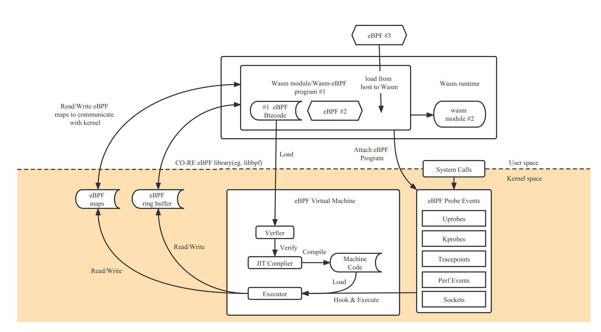

Wasm-bpf: A Common eBPF Kernel Programmability for Cloud-Native Webassembly
Author: Yusheng Zheng, Mao-Lin Chen
Originally developed with a browser-safe sandbox in mind, Wasm has evolved to make WebAssembly a high-performance, cross-platform and multilingual software sandbox environment for cloud-native software components, and Wasm lightweight containers are well suited as the next-generation serverless platform runtime. Another exciting trend is the rise of eBPF, which enables cloud-native developers to build secure networks, service grids, and multiple observable components, and which is also gradually penetrating and penetrating deeper into kernel components, providing more powerful kernel-state programmable interactions.
Wasm-bpf is a new open source project [1] that defines a set of abstractions for eBPF-related system interfaces and provides a corresponding set of development toolchains, libraries, and generic Wasm + eBPF runtime platform instances, giving applications in any Wasm virtual machine or Wasm lightweight container the ability to sink and extend usage scenarios to the kernel state, accessing almost all data in the kernel state and The eBPF runtime platform instance allows applications in any Wasm virtual machine or Wasm lightweight container to sink and expand their usage scenarios to the kernel state, access almost all data in the kernel state and user state, and achieve programmable control over the entire operating system in many aspects such as networking and security, thus greatly expanding the WebAssembly ecosystem in non-browser application scenarios.
eBPF-based System Interface for Wasm
Perhaps you have also read this quote from Solomon Hykes (one of the founders of Docker).
If we already had Wasm + WASI in 2008, we wouldn't have needed to create Docker at all. Wasm was that important. Server-side WebAssembly is the future of computing.
Because it can't rely on the existing JavaScript engine interfaces available in the browser, most Wasm lightweight containers that run outside the browser today require the use of WASI (WebAssembly System Interface). These runtimes allow Wasm applications to interact with their host operating system in a manner similar (but not identical) to POSIX.
However, compared to traditional containers where almost all system calls are available, the WASI currently provides very limited system resources, with only some basic support for file systems, socket network connections, etc. There are still significant gaps in the ability to access, control, and manage the underlying operating system resources, such as execution of Wasm modules or other external processes For example, there is still a large gap in the ability to access, control and manage the underlying resources of the operating system, such as the execution of Wasm modules or other external processes, the observation of resource limits and behavior, the fast forwarding and processing of network packets, and even the communication with other processes outside the wasm sandbox and access to peripherals. This also makes most Wasm lightweight containers in practice still mainly focus on purely compute-intensive applications, while in terms of networking, security, etc., still need to rely on traditional container technology.
This is the reason why we want to build Wasm-bpf project: to expand the whole WASI ecological blueprint by using the system interface provided by the current kernel state eBPF and the ability to interact with the user state, to bring more possible usage scenarios for Wasm applications, and to enhance the capability of eBPF programs in the user state.
In other words, similar to the Wasm program running in a browser, which accesses various system resources provided by the browser through the JavaScript engine interface, the Wasm-bpf solution is to access various OS resources with the help of the eBPF virtual machine; thanks to the wide support of eBPF in the Linux kernel and even other operating systems such as Windows. Thanks to the extensive support of eBPF in Linux kernels and even other operating systems such as Windows, the portability between different kernel versions and architectures, and the reliability of the kernel BPF authentication engine, we can still guarantee a certain degree of application portability and security boundaries.
The Wasm-bpf project has implemented a complete abstraction mechanism for the system interface between the kernel-state eBPF virtual machine and the user-state, and provides a corresponding toolchain for compiling eBPF applications into Wasm modules to facilitate efficient serialization-free, memory-sharing bi-directional communication between kernel-state eBPF and user-state Wasm, as well as code generation techniques to provide almost identical functionality to other user-state eBPF development frameworks. eBPF development framework through code generation technology, providing a nearly consistent, easy and convenient development experience. With the improved ecosystem support of the Wasm component model, we can also bring more user-state development languages to the eBPF community, and eBPF applications and data processing plug-ins implemented in different languages can be easily integrated, reused, and managed in a unified way.
On top of the libbpf library, which has almost become the de facto API standard for eBPF user states, and the WAMR (wasm-micro-runtime), a complete generic Wasm-eBPF runtime component can be built with only 300+ lines of code and supports most eBPF usage scenarios - anyone with any major Wasm runtime, or any Anyone with any major Wasm runtime, or any eBPF user state library, and any programming language, can easily add corresponding virtual machine support and reuse our toolchain to easily write and develop Wasm-eBPF programs.
There has been some exploration of combining eBPF and Wasm in the eunomia-bpf project, but it was not designed for Wasm native application scenarios, did not fit the Wasm-eBPF general programming model, and had low performance, so we created a new open source repository for the Wasm-bpf project to focus on using eBPF to enhance and extend WebAssembly usage scenarios and further improve the corresponding toolchain and development library support: https://github.com/eunomia-bpf/wasm-bpf
eBPF: Extending the Kernel Securely and Efficiently
eBPF is a revolutionary technology, originating from the Linux kernel, that allows sandboxed programs to be run in the kernel of the operating system. It is used to safely and efficiently extend the functionality of the kernel without changing the kernel's source code or loading kernel modules.
从历史上看，由于内核具有监督和控制整个系统的特权能力，所以操作系统一直是实现可观察性、安全性和网络功能等多种能力的理想场所。 同时，由于操作系统内核对稳定性和安全性的高要求，内核的新功能迭代通常非常谨慎，也很难接受自定义的、较少通用性的功能改进。 因此，与用户态的更多功能相比，内核态操作系统层面的创新率历来都比较低[2]。

eBPF 从根本上改变了这个公式。 通过允许在操作系统内运行沙盒程序，应用程序开发人员可以在运行时，可编程地向操作系统动态添加额外的功能。 然后，操作系统保证安全和执行效率，就像在即时编译（JIT）编译器和验证引擎的帮助下进行本地编译一样。eBPF 程序在内核版本之间是可移植的，并且可以自动更新，从而避免了工作负载中断和节点重启。
今天，eBPF被广泛用于各类场景：在现代数据中心和云原生环境中，可以提供高性能的网络包处理和负载均衡；以非常低的资源开销，做到对多种细粒度指标的可观测性，帮助应用程序开发人员跟踪应用程序，为性能故障排除提供洞察力；保障应用程序和容器运行时的安全执行，等等。 可能性是无穷的，而 eBPF 在操作系统内核中所释放的创新才刚刚开始[3]。
eBPF 的未来：内核的 JavaScript 可编程接口
对于浏览器而言，JavaScript 的引入带来的可编程性开启了一场巨大的革命，使浏览器发展成为几乎独立的操作系统。 现在让我们回到 eBPF：为了理解 eBPF 对 Linux 内核的可编程性影响，对 Linux 内核的结构以及它如何与应用程序和硬件进行交互有一个高层次的理解是有帮助的[4]。

Linux 内核的主要目的是抽象出硬件或虚拟硬件，并提供一个一致的API（系统调用），允许应用程序运行和共享资源。 To achieve this, a series of subsystems and layers are maintained to distribute these responsibilities. Each subsystem typically allows some degree of configuration to take into account the different needs of the user. If the desired behavior cannot be configured, it is necessary to change the kernel. Historically, changing the behavior of the kernel, or enabling user-written programs to run in the kernel, has given two options:
| Support a kernel module locally | Write a kernel module |
|---|---|
| Change the kernel source code and convince the Linux kernel community that such a change is necessary. Wait a few years for a new kernel version to become a commodity. | Fix it regularly, as every kernel version can break it. Risk breaking your Linux kernel due to the lack of security boundaries |
In practice, neither option is commonly used; the former is too costly, and the latter has almost no portability.
With eBPF, there is a new option to reprogram the behavior of the Linux kernel without changing the kernel's source code or loading kernel modules, while guaranteeing a certain degree of consistency and compatibility of behavior, as well as security, between different kernel versions. To achieve this, eBPF programs also need to have a corresponding set of APIs that allow user-defined applications to run and share resources -- in other words, in a sense, the eBPF virtual machine also provides a set of system call-like mechanisms that are available to Wasm virtual machines and user-state applications through the eBPF and user-state communication mechanisms. With the eBPF and user state communication mechanisms, Wasm VMs and user state applications can also gain full access to this set of "system calls", which can programmatically extend the capabilities of traditional system calls on the one hand, and achieve more efficient programmable IO processing on the other.
! new-os
{kind=link}
As the diagram above shows, today's Linux kernel is evolving into a new kernel model: user-defined applications can execute in both the kernel and user states, with the user state accessing system resources through traditional system calls and the kernel state interacting with various parts of the system through BPF Helper Calls. As of early 2023, there are more than 220 Helper System Interfaces in the eBPF virtual machine in the kernel, covering a very wide range of application scenarios.
It is important to note that BPF Helper Calls and System Calls are not in competition with each other; they have completely different programming models and scenarios where they have performance benefits, and they do not completely replace each other. The situation is similar for the Wasm and Wasi related ecosystems, where a specially designed wasi interface requires a lengthy standardization process but may yield better performance and portability guarantees for user-state applications in specific scenarios, while eBPF provides a fast and flexible solution for extending the system interface while maintaining the sandbox nature and portability.
The eBPF is still in its early stages, but with the ability to interact between the kernel and user state provided by the current eBPF, applications in the Wasm VM can already obtain data and return values (kprobe, uprobe, ...) from almost any function call in the kernel and user state via the Wasm-bpf system interface transformation. ; collect and understand all system calls and obtain packet and socket level data for all network operations at a very low cost (tracepoint, socket...) Add additional protocol analyzers to the network packet processing solution and easily program any forwarding logic (XDP, TC...) ) to meet changing needs without leaving the packet processing environment of the Linux kernel.
Moreover, eBPF has the ability to write data to any address of any process in user space (bpf_probe_write_user[5]), to modify the return value of kernel functions to a limited extent (bpf_override_return[6]), and even to execute some system calls directly in the kernel state [7]; fortunately, eBPF performs a bytecode analysis before loading into the Fortunately, eBPF performs strict security checks on the bytecode before loading it into the kernel to ensure that there are no memory out-of-bounds or other operations, while many features that may expand the attack surface and pose security risks need to be explicitly chosen to be enabled at compile time before the kernel can be used; certain eBPF features can also be explicitly chosen to be enabled or disabled before the Wasm VM loads the bytecode into the kernel to ensure the security of the sandbox.
All of these scenarios do not require leaving the Wasm lightweight container: unlike traditional applications that use Wasm as a data processing or control plug-in, where these steps are implemented by logic outside the Wasm VM, it is now possible to achieve complete control and interaction with eBPF and almost all system resources that eBPF can access, even generating eBPF in real time, from within the Wasm lightweight container code to change the behavior logic of the kernel, enabling programmability of the entire system from the user state to the kernel state.
Interaction flow between user space and eBPF programs
eBPF programs are function-based and event-driven, and a specific eBPF program is run when a kernel or user space application passes a hook point. To use an eBPF program, we first need to compile the corresponding source code into bpf bytecode using the clang/LLVM toolchain, which contains the corresponding data structure definitions, maps and progs definitions. progs are program segments, and maps can be used to store data or for bidirectional communication with the user space. After that, we can implement a complete eBPF application with the help of the user state development framework and the loading framework.
Common user-state eBPF development framework
For a complete eBPF application, there are usually two parts: the user state and the kernel state.
- The user state program needs to interact with the kernel through a series of system calls (mainly bpf system calls), create a corresponding map to store data in the kernel state or to communicate with the user state, dynamically select different segments to load according to the configuration, dynamically modify the bytecode or configure the parameters of the eBPF program, load the corresponding bytecode information into the kernel, ensure security through validators, and communicate with the kernel through maps and the kernel, passing data from the kernel state to the user state (or vice versa) through mechanisms such as ring buffer / perf buffer.
- The kernel state is mainly responsible for the specific computational logic and data collection.

A new eBPF development framework defined on top of the user-state Wasm-eBPF system interface
The project essentially wants to treat the Wasm sandbox as an alternative user-state runtime space on top of the OS, allowing Wasm applications to implement the same programming model and execution logic in the sandbox as eBPF applications that normally run in the user state.
Wasm-bpf would require a runtime module built on top of the host (outside the sandbox), and some runtime libraries compiled to Wasm bytecode inside the sandbox to provide complete support.

To achieve a complete development model, we need.
- a Wasm module can correspond to multiple eBPF procedures.
- an instance of an eBPF procedure can also be shared by multiple Wasm modules
- The ability to dynamically load eBPF programs from the Wasm sandbox into the kernel, select the desired mount points to mount them, unmount them, control the complete lifecycle of multiple eBPF bytecode objects, and support most eBPF program types.
- Bi-directional communication with the kernel via multiple types of Maps, with support for most types of Maps.
- Efficient sending of messages from the kernel state to the user state (and vice versa for ring buffering) via ring buffering and perf event polling.
- It can be adapted to almost any application scenario that uses eBPF programs, and can evolve and extend as kernel features are added, without requiring changes to the Wasm VM's system interface.
This is what the Wasm-bpf project is currently working on. We have also proposed a new Proposal for WASI: WASI-eBPF [7].
In the Wasm-bpf project, all communications between Wasm and eBPF VMs do not need to go through serialization and deserialization mechanisms, and with the support of code generation techniques and BTF (BPF type format [12]) information in the toolchain, we can achieve correct communication between eBPF and Wasm with potentially different structure in vivo layouts, different size end mechanisms, different pointer widths The data can be copied directly from the kernel state to the memory of the Wasm VM when communicating through eBPF Maps, avoiding the extra loss caused by multiple copies. At the same time, the eBPF-Wasm development experience for user-state programs is greatly improved by automatically generating skeleton (bpf code framework) and type definitions.
Thanks to the CO-RE (Compile-Once, Run Everywhere) technology provided by libbpf, porting eBPF bytecode objects between different kernel versions does not introduce an additional recompilation process, nor is there any LLVM/Clang dependency at runtime [12].
Typically a compiled eBPF-Wasm module is only about 90Kb and can be dynamically loaded into the kernel and executed in less than 100ms. We also provide several examples in our repository, corresponding to various scenarios such as observable, network, and security.
We would like to thank Associate Professor Xiaozheng Lai from South China University of Technology, Professor Lijun Chen's team from Xi'an University of Posts and Telecommunications, and teachers Pu Wang and Jicheng Shi from Datan Technology for their guidance and help in combining Wasm and eBPF. blog, we will give a more detailed analysis of the principle and performance, as well as some code examples.
The Wasm-bpf compilation toolchain and runtime modules are currently developed and maintained by the eunomia-bpf open source community, and we thank the PLCT Lab of the Institute of Software of the Chinese Academy of Sciences for their support and funding, and our fellow community members for their contributions. Next, we will also improve and explore more on the corresponding eBPF and Wasm related toolchain and runtime, and actively feed back and contribute to the upstream community.
References
- [1] wasm-bpf Github open source address: https://github.com/eunomia-bpf/wasm-bpf
- [2] When Wasm meets eBPF: Writing, distributing, loading and running eBPF programs using WebAssembly: https://zhuanlan.zhihu.com/p/573941739
- [3] https://ebpf.io/
- [4] What is eBPF: https://ebpf.io/what-is-ebpf
- [5] Offensive BPF: Understanding and using bpf_probe_write_user https://embracethered.com/blog/posts/2021/offensive-bpf-libbpf-bpf_ probe_write_user/
- [6] Cloud Native Security Attack and Defense｜Analysis and practice of escape container technology using eBPF: https://security.tencent.com/index.php/blog/msg/206
- [7] kernel-versions.md: https://github.com/iovisor/bcc/blob/master/docs/kernel-versions.md
- [8] WebAssembly: Docker without containers: https://zhuanlan.zhihu.com/p/595257541
- [9] Introduction to WebAssembly, a tool for scalability in cloud-native projects https://mp.weixin.qq.com/s/fap0bl6GFGi8zN5BFLpkCw
- [10] WASI-eBPF: https://github.com/WebAssembly/WASI/issues/513
- [11] BPF BTF Explained: https://www.ebpf.top/post/kernel_btf/
- [12] BPF portability and CO-RE (compile once, run everywhere): https://cloud.tencent.com/developer/article/1802154